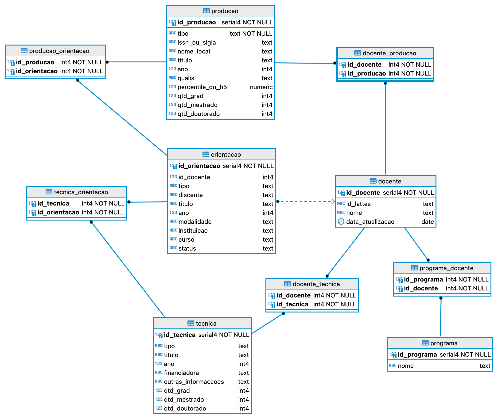

name: inverse class: center, middle, main-title # Projeto Referências para os Labs Laboratório de Programação --- # Ideia > Usar a explanação para construção de um projeto durante os labs --- # Proposta - Avaliação dos Programas de Pós - Prover índices de continuidade para os programas - Antecipar necessidades - Fatores: produção, orientação, qualis --- # Funcionalidades esperadas: - Cadastrais: - associar orientação a produção - preencher estatísticas associadas a orientação --- # Funcionalidades esperadas: - Informativas - Índices CAPES: IRestrito, INãoRestrito, IGeral - Produção por Qualis / H5 / Percentile - Produção por Docente, Programa - Produção com Discentes --- # Modelo de dados <center>  </center> --- # Modelo de Dados - <a href="https://dbdiagram.io/d/643326948615191cfa8c86b3">Link no dbdiagram.io</a> - <a href="">Link DDL</a> - --- # Visão Arquitetural --- # Protótipos --- # Escolhas Arquiteturais - Camadas: - divisão de funcionalidades e responsabilidades - manutenção de código - facilidade de mudanças - Orientada a serviços - `backend` gera serviços - consumidos pelo `frontend`